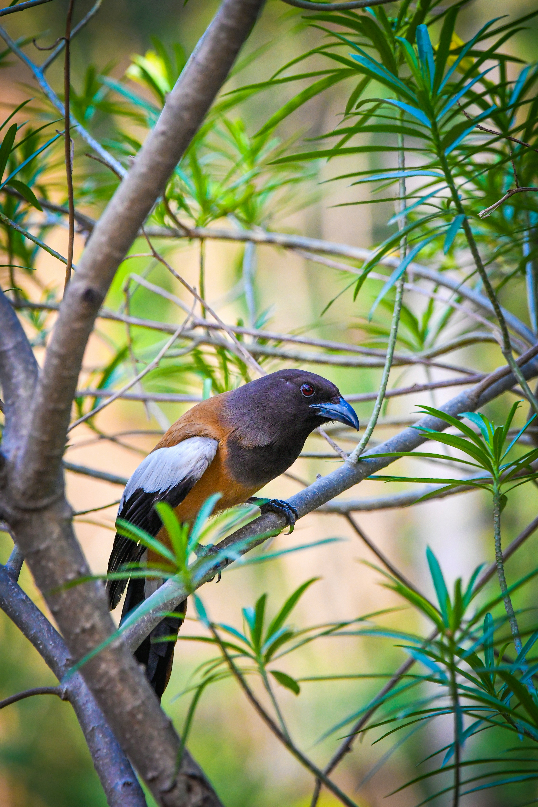

The Rufous Treepie is a long-tailed member of the crow family with a striking combination of rufous-brown, black, and grey plumage. It is commonly found in forests, woodland, gardens, farmland, plantations, and open areas containing scattered trees. It feeds on a wide variety of foods, including insects, fruits, small animals, eggs, and scraps, allowing it to adapt to many different environments. Rufous Treepies are active and curious birds and are often seen moving noisily through tree canopies or hopping between branches. Their long tails and contrasting plumage make them easy to recognise, while their varied calls often announce their presence before they are seen.
Family: Corvidae